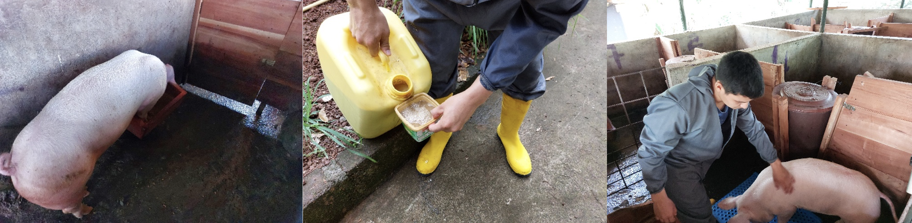
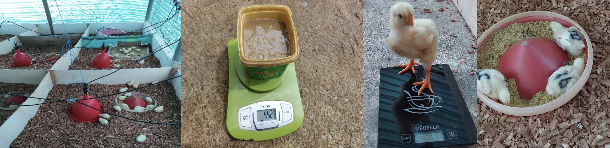
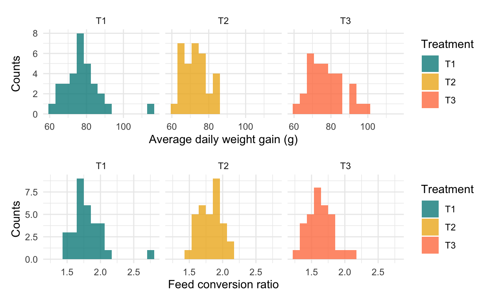
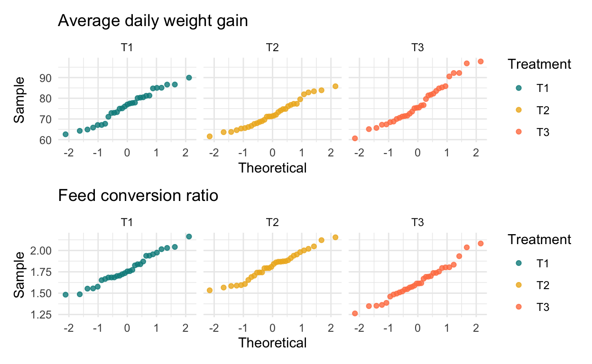
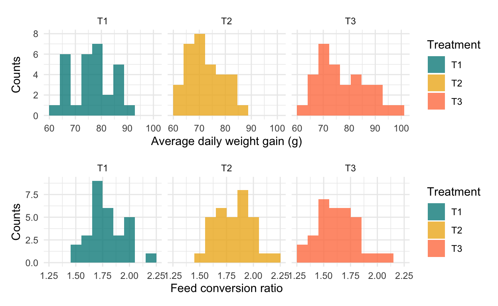
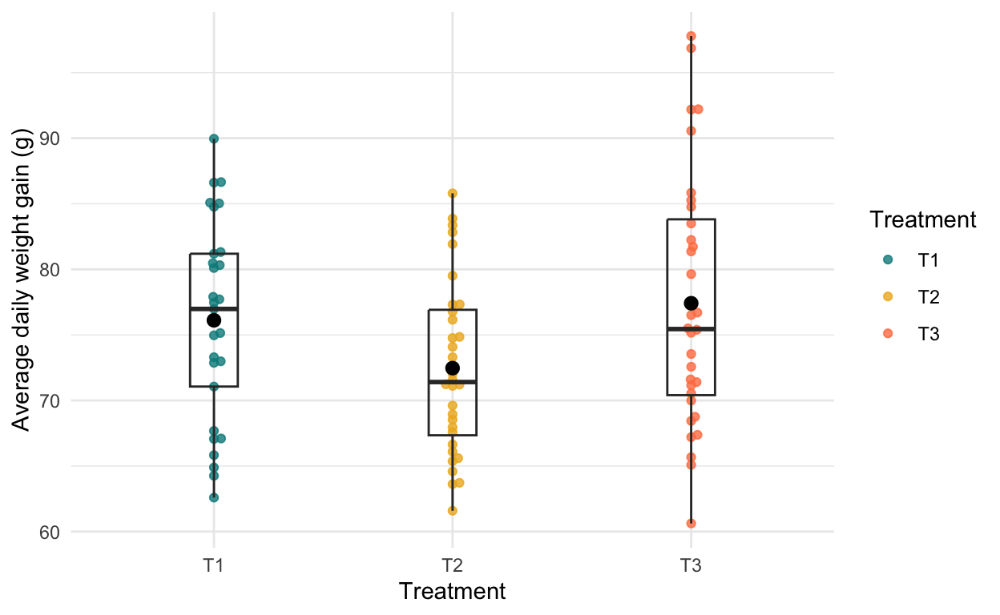
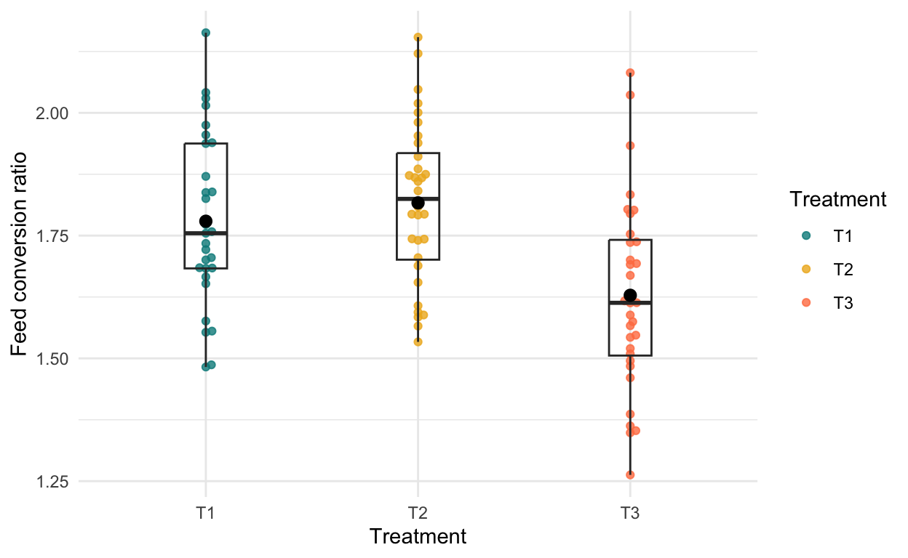

Show code
#Read in data
general_pigs <- read_csv("general_pigs.csv") %>%
clean_names() %>%
na.omit(general_pigs)
general <- read_csv("general.csv") %>%
clean_names()1. Overview
This report provides an exploratory overview of the results obtained in pig and broiler trials designed to assess the effect of dietary supplementation of Fish Silage (FS) from Galapagos fisheries on local productions. These trials were implemented by Conservation International between the months of January and May 2022 in the canton of Santa Cruz, Galapagos.
Specifically, productive aspects were evaluated, comparing a control diet based on commercial feeds with diets containing different proportions of FS. Commercial feed and FS intakes, weight gains, and feed conversion ratios (FCR) were compared to estimate the relative effect of FS supplementation on pig and poultry production. In this way, the trials sought to characterize the practical feasibility and productive virtues of FS supplementation in the context of the Galapagos agricultural sector.
Note: for a detailed description of the experimental design see Annex 1. A general interpretation of the results and a cost-benefit analysis are provided in Annex 2 and 3.
2. Data and Methods
Productive information from the trials was collected by the technical team of Conservation International Ecuador during the period of January to May 2022. The data contains observations of 8 pigs and 96 broilers. For both the pig and broiler trials, an exploratory visualization of the measured traits was performed. This was extended for the broiler trial, testing the results for statistical significance using a significance level (\(\alpha\)) of 0.05. Differences between groups were described by Cohen’s d effect size. The statistical significance of these differences was explored by means of ANOVA. All analyzes were done in R version 4.2.0 using RStudio version 1.4.1743.
3. Results
A. Pigs
The trial in pigs was carried out between the months of January and March 2022 on a farm located in the Bellavista parish, Santa Cruz, Galapagos. Eight 45-day-old crossbred pigs were randomly distributed into two dietary treatments: a control diet (T1) and a diet with 8% (dry weight) of FS (T2). It was not possible to form replicates given the low number of animals under evaluation. The assessment period was 80 days, ending with animals of 125 days (about 65 kg body weight on average). The animals remained in facilities according to what was detailed in the experimental design (Annex 1) and the traits evaluated were: feed intake, FS intake, weight gain, and carcass yield. Additionally, a sensory evaluation of pork meat was carried out in the laboratory of the Escuela Superior Politécnica del Litoral (ESPOL).
No detailed statistical analyses were performed for this trial. The limited number of individuals under study and the intrinsic genetic variations between crossbred animals means that statistically significant results cannot be verified. The results of this trial are qualitative in nature, documenting the use of FS in Galapagos pig production.
Show code
knitr::include_graphics("/Users/marianoviz/Desktop/R Projects and Stuff/ESM 244 Rstudio Work/mv-website/_posts/2022-07-26-statistical-analysis-of-the-effect-on-growth-performance-of-incorporating-fish-silage-in-the-diet-of-pigs-and-broilers-in-galapagos/pigs.png")
Pigs trial - Galapagos April 2022 | Credit: Luis García Granda
a. Measured Traits
Show code
bal_table_pigs <- general_pigs %>%
group_by(tratamiento) %>%
summarize(
"1" = round(mean(consumo_bal_gr_dia1, na.rm = TRUE),2),
"2" = round(mean(consumo_bal_gr_dia2, na.rm = TRUE),2),
"3" = round(mean(consumo_bal_gr_dia3, na.rm = TRUE),2),
"4" = round(mean(consumo_bal_gr_dia4, na.rm = TRUE),2),
"5" = round(mean(consumo_bal_gr_dia5, na.rm = TRUE),2),
"6" = round(mean(consumo_bal_gr_dia6, na.rm = TRUE),2),
"7" = round(mean(consumo_bal_gr_dia7, na.rm = TRUE),2),
"8" = round(mean(consumo_bal_gr_dia8, na.rm = TRUE),2),
"9" = round(mean(consumo_bal_gr_dia9, na.rm = TRUE),2),
"10" = round(mean(consumo_bal_gr_dia10, na.rm = TRUE),2),
"11" = round(mean(consumo_bal_gr_dia11, na.rm = TRUE),2),
"12" = round(mean(consumo_bal_gr_dia12, na.rm = TRUE),2),
"13" = round(mean(consumo_bal_gr_dia13, na.rm = TRUE),2),
"14" = round(mean(consumo_bal_gr_dia14, na.rm = TRUE),2),
"15" = round(mean(consumo_bal_gr_dia15, na.rm = TRUE),2),
"16" = round(mean(consumo_bal_gr_dia16, na.rm = TRUE),2),
"17" = round(mean(consumo_bal_gr_dia17, na.rm = TRUE),2),
"18" = round(mean(consumo_bal_gr_dia18, na.rm = TRUE),2),
"19" = round(mean(consumo_bal_gr_dia19, na.rm = TRUE),2),
"20" = round(mean(consumo_bal_gr_dia20, na.rm = TRUE),2),
"21" = round(mean(consumo_bal_gr_dia21, na.rm = TRUE),2),
"22" = round(mean(consumo_bal_gr_dia22, na.rm = TRUE),2),
"23" = round(mean(consumo_bal_gr_dia23, na.rm = TRUE),2),
"24" = round(mean(consumo_bal_gr_dia24, na.rm = TRUE),2),
"25" = round(mean(consumo_bal_gr_dia25, na.rm = TRUE),2),
"26" = round(mean(consumo_bal_gr_dia26, na.rm = TRUE),2),
"27" = round(mean(consumo_bal_gr_dia27, na.rm = TRUE),2),
"28" = round(mean(consumo_bal_gr_dia28, na.rm = TRUE),2),
"29" = round(mean(consumo_bal_gr_dia29, na.rm = TRUE),2),
"30" = round(mean(consumo_bal_gr_dia30, na.rm = TRUE),2),
"31" = round(mean(consumo_bal_gr_dia31, na.rm = TRUE),2),
"32" = round(mean(consumo_bal_gr_dia32, na.rm = TRUE),2),
"33" = round(mean(consumo_bal_gr_dia33, na.rm = TRUE),2),
"34" = round(mean(consumo_bal_gr_dia34, na.rm = TRUE),2),
"35" = round(mean(consumo_bal_gr_dia35, na.rm = TRUE),2),
"36" = round(mean(consumo_bal_gr_dia36, na.rm = TRUE),2),
"37" = round(mean(consumo_bal_gr_dia37, na.rm = TRUE),2),
"38" = round(mean(consumo_bal_gr_dia38, na.rm = TRUE),2),
"39" = round(mean(consumo_bal_gr_dia39, na.rm = TRUE),2),
"40" = round(mean(consumo_bal_gr_dia40, na.rm = TRUE),2),
"41" = round(mean(consumo_bal_gr_dia41, na.rm = TRUE),2),
"42" = round(mean(consumo_bal_gr_dia42, na.rm = TRUE),2),
"43" = round(mean(consumo_bal_gr_dia43, na.rm = TRUE),2),
"44" = round(mean(consumo_bal_gr_dia44, na.rm = TRUE),2),
"45" = round(mean(consumo_bal_gr_dia45, na.rm = TRUE),2),
"46" = round(mean(consumo_bal_gr_dia46, na.rm = TRUE),2),
"47" = round(mean(consumo_bal_gr_dia47, na.rm = TRUE),2),
"48" = round(mean(consumo_bal_gr_dia48, na.rm = TRUE),2),
"49" = round(mean(consumo_bal_gr_dia49, na.rm = TRUE),2),
"50" = round(mean(consumo_bal_gr_dia50, na.rm = TRUE),2),
"51" = round(mean(consumo_bal_gr_dia51, na.rm = TRUE),2),
"52" = round(mean(consumo_bal_gr_dia52, na.rm = TRUE),2),
"53" = round(mean(consumo_bal_gr_dia53, na.rm = TRUE),2),
"54" = round(mean(consumo_bal_gr_dia54, na.rm = TRUE),2),
"55" = round(mean(consumo_bal_gr_dia55, na.rm = TRUE),2),
"56" = round(mean(consumo_bal_gr_dia56, na.rm = TRUE),2),
"57" = round(mean(consumo_bal_gr_dia57, na.rm = TRUE),2),
"58" = round(mean(consumo_bal_gr_dia58, na.rm = TRUE),2),
"59" = round(mean(consumo_bal_gr_dia59, na.rm = TRUE),2),
"60" = round(mean(consumo_bal_gr_dia60, na.rm = TRUE),2),
"61" = round(mean(consumo_bal_gr_dia61, na.rm = TRUE),2),
"62" = round(mean(consumo_bal_gr_dia62, na.rm = TRUE),2),
"63" = round(mean(consumo_bal_gr_dia63, na.rm = TRUE),2),
"64" = round(mean(consumo_bal_gr_dia64, na.rm = TRUE),2),
"65" = round(mean(consumo_bal_gr_dia65, na.rm = TRUE),2),
"66" = round(mean(consumo_bal_gr_dia66, na.rm = TRUE),2),
"67" = round(mean(consumo_bal_gr_dia67, na.rm = TRUE),2),
"68" = round(mean(consumo_bal_gr_dia68, na.rm = TRUE),2),
"69" = round(mean(consumo_bal_gr_dia69, na.rm = TRUE),2),
"70" = round(mean(consumo_bal_gr_dia70, na.rm = TRUE),2),
"71" = round(mean(consumo_bal_gr_dia71, na.rm = TRUE),2),
"72" = round(mean(consumo_bal_gr_dia72, na.rm = TRUE),2),
"73" = round(mean(consumo_bal_gr_dia73, na.rm = TRUE),2),
"74" = round(mean(consumo_bal_gr_dia74, na.rm = TRUE),2),
"75" = round(mean(consumo_bal_gr_dia75, na.rm = TRUE),2),
"76" = round(mean(consumo_bal_gr_dia76, na.rm = TRUE),2),
"77" = round(mean(consumo_bal_gr_dia77, na.rm = TRUE),2),
"78" = round(mean(consumo_bal_gr_dia78, na.rm = TRUE),2),
"79" = round(mean(consumo_bal_gr_dia79, na.rm = TRUE),2),
n = n()
)
bal_day_pigs <- bal_table_pigs %>%
pivot_longer(
cols = "1":"79",
names_to = "day",
values_to = "mean_bal_consumption"
) %>%
mutate(day = as.numeric(day))
mean_bal_plot_pigs <- ggplot(data = bal_day_pigs, aes(x = day, y = mean_bal_consumption))+
geom_line(aes(color = tratamiento))+
scale_color_manual(values = c("cyan4","coral"))+
labs(x = "Day",
y = "Feed intake (g)",
col="",
title = "Feed intake - 80 day trial in pigs")+
theme_minimal()
ggplotly(mean_bal_plot_pigs)%>%
layout(legend = list( x = 1, y = 0.5)) %>%
layout(legend=list(title=list(text='Treatment')))Figure 1. Feed intake (g) for pigs of groups T1 and T2. Teal (T1) and coral (T2) lines indicate average feed intakes for each group. Data: trial carried out in Galapagos by Conservation International Ecuador during the months of January to March 2022.
Show code
FS_table_pigs <- general_pigs %>%
group_by(tratamiento) %>%
summarize(
"1" = round(mean(consumo_ep_gr_dia_1, na.rm = TRUE),2),
"2" = round(mean(consumo_ep_gr_dia_2, na.rm = TRUE),2),
"3" = round(mean(consumo_ep_gr_dia_3, na.rm = TRUE),2),
"4" = round(mean(consumo_ep_gr_dia_4, na.rm = TRUE),2),
"5" = round(mean(consumo_ep_gr_dia_5, na.rm = TRUE),2),
"6" = round(mean(consumo_ep_gr_dia_6, na.rm = TRUE),2),
"7" = round(mean(consumo_ep_gr_dia_7, na.rm = TRUE),2),
"8" = round(mean(consumo_ep_gr_dia_8, na.rm = TRUE),2),
"9" = round(mean(consumo_ep_gr_dia_9, na.rm = TRUE),2),
"10" = round(mean(consumo_ep_gr_dia_10, na.rm = TRUE),2),
"11" = round(mean(consumo_ep_gr_dia_11, na.rm = TRUE),2),
"12" = round(mean(consumo_ep_gr_dia_12, na.rm = TRUE),2),
"13" = round(mean(consumo_ep_gr_dia_13, na.rm = TRUE),2),
"14" = round(mean(consumo_ep_gr_dia_14, na.rm = TRUE),2),
"15" = round(mean(consumo_ep_gr_dia_15, na.rm = TRUE),2),
"16" = round(mean(consumo_ep_gr_dia_16, na.rm = TRUE),2),
"17" = round(mean(consumo_ep_gr_dia_17, na.rm = TRUE),2),
"18" = round(mean(consumo_ep_gr_dia_18, na.rm = TRUE),2),
"19" = round(mean(consumo_ep_gr_dia_19, na.rm = TRUE),2),
"20" = round(mean(consumo_ep_gr_dia_20, na.rm = TRUE),2),
"21" = round(mean(consumo_ep_gr_dia_21, na.rm = TRUE),2),
"22" = round(mean(consumo_ep_gr_dia_22, na.rm = TRUE),2),
"23" = round(mean(consumo_ep_gr_dia_23, na.rm = TRUE),2),
"24" = round(mean(consumo_ep_gr_dia_24, na.rm = TRUE),2),
"25" = round(mean(consumo_ep_gr_dia_25, na.rm = TRUE),2),
"26" = round(mean(consumo_ep_gr_dia_26, na.rm = TRUE),2),
"27" = round(mean(consumo_ep_gr_dia_27, na.rm = TRUE),2),
"28" = round(mean(consumo_ep_gr_dia_28, na.rm = TRUE),2),
"29" = round(mean(consumo_ep_gr_dia_29, na.rm = TRUE),2),
"30" = round(mean(consumo_ep_gr_dia_30, na.rm = TRUE),2),
"31" = round(mean(consumo_ep_gr_dia_31, na.rm = TRUE),2),
"32" = round(mean(consumo_ep_gr_dia_32, na.rm = TRUE),2),
"33" = round(mean(consumo_ep_gr_dia_33, na.rm = TRUE),2),
"34" = round(mean(consumo_ep_gr_dia_34, na.rm = TRUE),2),
"35" = round(mean(consumo_ep_gr_dia_35, na.rm = TRUE),2),
"36" = round(mean(consumo_ep_gr_dia_36, na.rm = TRUE),2),
"37" = round(mean(consumo_ep_gr_dia_37, na.rm = TRUE),2),
"38" = round(mean(consumo_ep_gr_dia_38, na.rm = TRUE),2),
"39" = round(mean(consumo_ep_gr_dia_39, na.rm = TRUE),2),
"40" = round(mean(consumo_ep_gr_dia_40, na.rm = TRUE),2),
"41" = round(mean(consumo_ep_gr_dia_41, na.rm = TRUE),2),
"42" = round(mean(consumo_ep_gr_dia_42, na.rm = TRUE),2),
"43" = round(mean(consumo_ep_gr_dia_43, na.rm = TRUE),2),
"44" = round(mean(consumo_ep_gr_dia_44, na.rm = TRUE),2),
"45" = round(mean(consumo_ep_gr_dia_45, na.rm = TRUE),2),
"46" = round(mean(consumo_ep_gr_dia_46, na.rm = TRUE),2),
"47" = round(mean(consumo_ep_gr_dia_47, na.rm = TRUE),2),
"48" = round(mean(consumo_ep_gr_dia_48, na.rm = TRUE),2),
"49" = round(mean(consumo_ep_gr_dia_49, na.rm = TRUE),2),
"50" = round(mean(consumo_ep_gr_dia_50, na.rm = TRUE),2),
"51" = round(mean(consumo_ep_gr_dia_51, na.rm = TRUE),2),
"52" = round(mean(consumo_ep_gr_dia_52, na.rm = TRUE),2),
"53" = round(mean(consumo_ep_gr_dia_53, na.rm = TRUE),2),
"54" = round(mean(consumo_ep_gr_dia_54, na.rm = TRUE),2),
"55" = round(mean(consumo_ep_gr_dia_55, na.rm = TRUE),2),
"56" = round(mean(consumo_ep_gr_dia_56, na.rm = TRUE),2),
"57" = round(mean(consumo_ep_gr_dia_57, na.rm = TRUE),2),
"58" = round(mean(consumo_ep_gr_dia_58, na.rm = TRUE),2),
"59" = round(mean(consumo_ep_gr_dia_59, na.rm = TRUE),2),
"60" = round(mean(consumo_ep_gr_dia_60, na.rm = TRUE),2),
"61" = round(mean(consumo_ep_gr_dia_61, na.rm = TRUE),2),
"62" = round(mean(consumo_ep_gr_dia_62, na.rm = TRUE),2),
"63" = round(mean(consumo_ep_gr_dia_63, na.rm = TRUE),2),
"64" = round(mean(consumo_ep_gr_dia_64, na.rm = TRUE),2),
"65" = round(mean(consumo_ep_gr_dia_65, na.rm = TRUE),2),
"66" = round(mean(consumo_ep_gr_dia_66, na.rm = TRUE),2),
"67" = round(mean(consumo_ep_gr_dia_67, na.rm = TRUE),2),
"68" = round(mean(consumo_ep_gr_dia_68, na.rm = TRUE),2),
"69" = round(mean(consumo_ep_gr_dia_69, na.rm = TRUE),2),
"70" = round(mean(consumo_ep_gr_dia_70, na.rm = TRUE),2),
"71" = round(mean(consumo_ep_gr_dia_71, na.rm = TRUE),2),
"72" = round(mean(consumo_ep_gr_dia_72, na.rm = TRUE),2),
"73" = round(mean(consumo_ep_gr_dia_73, na.rm = TRUE),2),
"74" = round(mean(consumo_ep_gr_dia_74, na.rm = TRUE),2),
"75" = round(mean(consumo_ep_gr_dia_75, na.rm = TRUE),2),
"76" = round(mean(consumo_ep_gr_dia_76, na.rm = TRUE),2),
"77" = round(mean(consumo_ep_gr_dia_77, na.rm = TRUE),2),
"78" = round(mean(consumo_ep_gr_dia_78, na.rm = TRUE),2),
"79" = round(mean(consumo_ep_gr_dia_79, na.rm = TRUE),2),
n = n()
)
FS_day_pigs <- FS_table_pigs %>%
pivot_longer(
cols = "1":"79",
names_to = "day",
values_to = "mean_fs_consumption"
) %>%
mutate(day = as.numeric(day))
mean_fs_plot_pigs <- ggplot(data = FS_day_pigs, aes(x = day, y = mean_fs_consumption))+
geom_line(aes(color = tratamiento))+
scale_color_manual(values = c("cyan4","coral"))+
labs(x = "Day",
y = "Fish Silage intake (g)",
col="",
title = "Fish Silage intake - 80 day trial in pigs")+
theme_minimal()
ggplotly(mean_fs_plot_pigs)%>%
layout(legend = list( x = 1, y = 0.5)) %>%
layout(legend=list(title=list(text='Treatment')))Figure 2. Fish Silage (FS) intake (g) for pigs of groups T1 and T2. Teal (T1) and coral (T2) lines indicate average FS intakes for each group. As can be seen, control treatment T1 did not consume FS. Data: trial carried out in Galapagos by Conservation International Ecuador during the months of January to March 2022.
Show code
total_table_pigs <- general_pigs %>%
group_by(tratamiento) %>%
summarize(
"1" = round(mean(consumo_total_gr_dia1, na.rm = TRUE),2),
"2" = round(mean(consumo_total_gr_dia2, na.rm = TRUE),2),
"3" = round(mean(consumo_total_gr_dia3, na.rm = TRUE),2),
"4" = round(mean(consumo_total_gr_dia4, na.rm = TRUE),2),
"5" = round(mean(consumo_total_gr_dia5, na.rm = TRUE),2),
"6" = round(mean(consumo_total_gr_dia6, na.rm = TRUE),2),
"7" = round(mean(consumo_total_gr_dia7, na.rm = TRUE),2),
"8" = round(mean(consumo_total_gr_dia8, na.rm = TRUE),2),
"9" = round(mean(consumo_total_gr_dia9, na.rm = TRUE),2),
"10" = round(mean(consumo_total_gr_dia10, na.rm = TRUE),2),
"11" = round(mean(consumo_total_gr_dia11, na.rm = TRUE),2),
"12" = round(mean(consumo_total_gr_dia12, na.rm = TRUE),2),
"13" = round(mean(consumo_total_gr_dia13, na.rm = TRUE),2),
"14" = round(mean(consumo_total_gr_dia14, na.rm = TRUE),2),
"15" = round(mean(consumo_total_gr_dia15, na.rm = TRUE),2),
"16" = round(mean(consumo_total_gr_dia16, na.rm = TRUE),2),
"17" = round(mean(consumo_total_gr_dia17, na.rm = TRUE),2),
"18" = round(mean(consumo_total_gr_dia18, na.rm = TRUE),2),
"19" = round(mean(consumo_total_gr_dia19, na.rm = TRUE),2),
"20" = round(mean(consumo_total_gr_dia20, na.rm = TRUE),2),
"21" = round(mean(consumo_total_gr_dia21, na.rm = TRUE),2),
"22" = round(mean(consumo_total_gr_dia22, na.rm = TRUE),2),
"23" = round(mean(consumo_total_gr_dia23, na.rm = TRUE),2),
"24" = round(mean(consumo_total_gr_dia24, na.rm = TRUE),2),
"25" = round(mean(consumo_total_gr_dia25, na.rm = TRUE),2),
"26" = round(mean(consumo_total_gr_dia26, na.rm = TRUE),2),
"27" = round(mean(consumo_total_gr_dia27, na.rm = TRUE),2),
"28" = round(mean(consumo_total_gr_dia28, na.rm = TRUE),2),
"29" = round(mean(consumo_total_gr_dia29, na.rm = TRUE),2),
"30" = round(mean(consumo_total_gr_dia30, na.rm = TRUE),2),
"31" = round(mean(consumo_total_gr_dia31, na.rm = TRUE),2),
"32" = round(mean(consumo_total_gr_dia32, na.rm = TRUE),2),
"33" = round(mean(consumo_total_gr_dia33, na.rm = TRUE),2),
"34" = round(mean(consumo_total_gr_dia34, na.rm = TRUE),2),
"35" = round(mean(consumo_total_gr_dia35, na.rm = TRUE),2),
"36" = round(mean(consumo_total_gr_dia36, na.rm = TRUE),2),
"37" = round(mean(consumo_total_gr_dia37, na.rm = TRUE),2),
"38" = round(mean(consumo_total_gr_dia38, na.rm = TRUE),2),
"39" = round(mean(consumo_total_gr_dia39, na.rm = TRUE),2),
"40" = round(mean(consumo_total_gr_dia40, na.rm = TRUE),2),
"41" = round(mean(consumo_total_gr_dia41, na.rm = TRUE),2),
"42" = round(mean(consumo_total_gr_dia42, na.rm = TRUE),2),
"43" = round(mean(consumo_total_gr_dia43, na.rm = TRUE),2),
"44" = round(mean(consumo_total_gr_dia44, na.rm = TRUE),2),
"45" = round(mean(consumo_total_gr_dia45, na.rm = TRUE),2),
"46" = round(mean(consumo_total_gr_dia46, na.rm = TRUE),2),
"47" = round(mean(consumo_total_gr_dia47, na.rm = TRUE),2),
"48" = round(mean(consumo_total_gr_dia48, na.rm = TRUE),2),
"49" = round(mean(consumo_total_gr_dia49, na.rm = TRUE),2),
"50" = round(mean(consumo_total_gr_dia50, na.rm = TRUE),2),
"51" = round(mean(consumo_total_gr_dia51, na.rm = TRUE),2),
"52" = round(mean(consumo_total_gr_dia52, na.rm = TRUE),2),
"53" = round(mean(consumo_total_gr_dia53, na.rm = TRUE),2),
"54" = round(mean(consumo_total_gr_dia54, na.rm = TRUE),2),
"55" = round(mean(consumo_total_gr_dia55, na.rm = TRUE),2),
"56" = round(mean(consumo_total_gr_dia56, na.rm = TRUE),2),
"57" = round(mean(consumo_total_gr_dia57, na.rm = TRUE),2),
"58" = round(mean(consumo_total_gr_dia58, na.rm = TRUE),2),
"59" = round(mean(consumo_total_gr_dia59, na.rm = TRUE),2),
"60" = round(mean(consumo_total_gr_dia60, na.rm = TRUE),2),
"61" = round(mean(consumo_total_gr_dia61, na.rm = TRUE),2),
"62" = round(mean(consumo_total_gr_dia62, na.rm = TRUE),2),
"63" = round(mean(consumo_total_gr_dia63, na.rm = TRUE),2),
"64" = round(mean(consumo_total_gr_dia64, na.rm = TRUE),2),
"65" = round(mean(consumo_total_gr_dia65, na.rm = TRUE),2),
"66" = round(mean(consumo_total_gr_dia66, na.rm = TRUE),2),
"67" = round(mean(consumo_total_gr_dia67, na.rm = TRUE),2),
"68" = round(mean(consumo_total_gr_dia68, na.rm = TRUE),2),
"69" = round(mean(consumo_total_gr_dia69, na.rm = TRUE),2),
"70" = round(mean(consumo_total_gr_dia70, na.rm = TRUE),2),
"71" = round(mean(consumo_total_gr_dia71, na.rm = TRUE),2),
"72" = round(mean(consumo_total_gr_dia72, na.rm = TRUE),2),
"73" = round(mean(consumo_total_gr_dia73, na.rm = TRUE),2),
"74" = round(mean(consumo_total_gr_dia74, na.rm = TRUE),2),
"75" = round(mean(consumo_total_gr_dia75, na.rm = TRUE),2),
"76" = round(mean(consumo_total_gr_dia76, na.rm = TRUE),2),
"77" = round(mean(consumo_total_gr_dia77, na.rm = TRUE),2),
"78" = round(mean(consumo_total_gr_dia78, na.rm = TRUE),2),
"79" = round(mean(consumo_total_gr_dia79, na.rm = TRUE),2),
n = n()
)
total_day_pigs <- total_table_pigs %>%
pivot_longer(
cols = "1":"79",
names_to = "day",
values_to = "mean_total_consumption"
) %>%
mutate(day = as.numeric(day))
mean_total_plot_pigs <- ggplot(data = total_day_pigs, aes(x = day, y = mean_total_consumption))+
geom_line(aes(color = tratamiento))+
scale_color_manual(values = c("cyan4","coral"))+
labs(x = "Day",
y = "Total intake (g)",
col="",
title = "Total food intake - 80 day trial in pigs")+
theme_minimal()
ggplotly(mean_total_plot_pigs)%>%
layout(legend = list( x = 1, y = 0.5)) %>%
layout(legend=list(title=list(text='Treatment')))Figure 3. Total intake (g) for pigs of groups T1 and T2. Teal (T1) and coral (T2) lines indicate average total intakes (feed plus FS) for each group. These values correspond to wet weight. When converted to dry weight, both groups consumed the same amount of dry matter. Data: trial carried out in Galapagos by Conservation International Ecuador during the months of January to March 2022.
Show code
weight_table_pigs <- general_pigs %>%
group_by(tratamiento) %>%
summarize(
"1" = round(mean(peso_dia_1, na.rm = TRUE),2),
"8" = round(mean(peso_dia_8, na.rm = TRUE),2),
"15" = round(mean(peso_dia_15, na.rm = TRUE),2),
"22" = round(mean(peso_dia_22, na.rm = TRUE),2),
"29" = round(mean(peso_dia_29, na.rm = TRUE),2),
"36" = round(mean(peso_dia_36, na.rm = TRUE),2),
"43" = round(mean(peso_dia_43, na.rm = TRUE),2),
"50" = round(mean(peso_dia_50, na.rm = TRUE),2),
"57" = round(mean(peso_dia_57, na.rm = TRUE),2),
"64" = round(mean(peso_dia_64, na.rm = TRUE),2),
"71" = round(mean(peso_dia_71, na.rm = TRUE),2),
"78" = round(mean(peso_dia_78, na.rm = TRUE),2),
"81" = round(mean(peso_dia_81, na.rm = TRUE),2),
n = n()
)
weight_day_pigs <- weight_table_pigs %>%
pivot_longer(
cols = "1":"81",
names_to = "day",
values_to = "mean_weight"
) %>%
mutate(day = as.numeric(day))
mean_weight_plot_pigs <- ggplot(data = weight_day_pigs, aes(x = day, y = mean_weight))+
geom_line(aes(color = tratamiento))+
scale_color_manual(values = c("cyan4","coral"))+
labs(x = "Day",
y = "Average weight (kg)",
col="",
title = "Weight - 80 day trial in pigs")+
theme_minimal()
ggplotly(mean_weight_plot_pigs)%>%
layout(legend = list( x = 1, y = 0.5)) %>%
layout(legend=list(title=list(text='Treatment')))Figure 4. Weight (kg) for pigs of groups T1 and T2. Teal (T1) and coral (T2) lines indicate average weight for each group. Data: trial carried out in Galapagos by Conservation International Ecuador during the months of January to March 2022.
Table 1. Final live weight (kg), Slaughtered weight (kg), and Carcass Yield (%) for each individual within groups T1 and T2. Data: trial carried out in Galapagos by Conservation International Ecuador during the months of January to March 2022.
Show code
pigs_table <- general_pigs %>%
select(c(identificacion, tratamiento, peso_vivo, peso_faenado, rendimiento_a_la_canal_percent)) %>%
mutate(peso_faenado = round(peso_faenado, 2))%>%
mutate(rendimiento_a_la_canal_percent = round(rendimiento_a_la_canal_percent))
pigs_table %>%
kable(col.names = c("Identification", "Treatment", "Final live weight (kg)", "Slaughtered weight (kg)", "Carcass Yield (%)")) %>%
kable_styling(bootstrap_options = "striped", full_width = FALSE)| Identification | Treatment | Final live weight (kg) | Slaughtered weight (kg) | Carcass Yield (%) |
|---|---|---|---|---|
| 1 | T1 | 77.26 | 60.00 | 78 |
| 2 | T1 | 54.06 | 43.64 | 81 |
| 3 | T1 | 68.56 | 51.36 | 75 |
| 4 | T1 | 66.72 | 52.73 | 79 |
| 1 | T2 | 62.30 | 49.55 | 80 |
| 2 | T2 | 54.60 | 43.64 | 80 |
| 3 | T2 | 67.84 | 53.41 | 79 |
| 4 | T2 | 71.06 | 55.45 | 78 |
As indicated above, the limited number and the genetic characteristics of the animals evaluated did not allow to verify statistically significant differences between the dietary treatments. Nevertheless, this trial showed that FS can be successfully used in Galapagos pig production as a feed supplement, achieving similar yields to those obtained with available commercial feeds.
b. Sensory Evaluation of the Meat
An organoleptic evaluation of the meat was carried out to assess the presence of fish flavor in the animals fed with FS. Samples from animals fed with and without FS were given to 31 untrained panelists. These samples were clustered into groups of three (two samples belonging to the same dietary treatment and a distinct one belonging to the other) asking the panelists to identify the distinct sample. The evaluation methodology assumes that if there were distinguishable differences between the dietary treatments, the panelists could identify the distinct sample with a frequency greater than 33% (probability of selecting the different sample simply by chance).
Table 2 Results of the sensory evaluation of pork meat from groups T1 and T2 carried out by the Escuela Superior Politécnica del Litoral (ESPOL).
Show code
meat_test <- read_csv( "meat.csv") %>%
clean_names() %>%
na.omit(meat_test)
meat_test %>%
kable(col.names = c("Response type", "Total response", "Total response (%)")) %>%
kable_styling(bootstrap_options = "striped", full_width = FALSE)| Response type | Total response | Total response (%) |
|---|---|---|
| Correct | 14 | 45% |
| Incorrect | 17 | 55% |
The results deviate slightly from those expected due to chance if there were no distinguishable differences between the samples. However, according to Lawless and Heymann (2010), these differences are not enough to establish statistically significant differences. When asked, the panelists said that they had not noticed any unusual flavors in the samples tested.
B. Broilers
The trial in broilers was carried out between the months of April and May 2022 on a farm located in the Santa Rosa parish, Santa Cruz, Galapagos province. Ninety-six, day-old broilers (Cobb 500) of either sex were randomized into three treatment groups with two replicates in each group (16 chicks per replicate). The dietary treatments were a control diet (T1), a diet containing 6% FS (T2), and a diet containing 12% FS (T3). The evaluation period was 46 days. Animals remained in facilities according to what was detailed in the experimental design (Annex 1) and the characteristics evaluated were: feed intake, SF intake, weight gain, and feed conversion ratio (FCR).
Show code
knitr::include_graphics("/Users/marianoviz/Desktop/R Projects and Stuff/ESM 244 Rstudio Work/mv-website/_posts/2022-07-26-statistical-analysis-of-the-effect-on-growth-performance-of-incorporating-fish-silage-in-the-diet-of-pigs-and-broilers-in-galapagos/pollos.png")
Broilers trial - Galapagos January 2022 | Credit: Luis García Granda
a. Measured Traits
Show code
bal_table <- general %>%
group_by(tratamiento) %>%
summarize(
"1" = round(mean(consumo_bal_gr_dia1, na.rm = TRUE),2),
"2" = round(mean(consumo_bal_gr_dia2, na.rm = TRUE),2),
"3" = round(mean(consumo_bal_gr_dia3, na.rm = TRUE),2),
"4" = round(mean(consumo_bal_gr_dia4, na.rm = TRUE),2),
"5" = round(mean(consumo_bal_gr_dia5, na.rm = TRUE),2),
"6" = round(mean(consumo_bal_gr_dia6, na.rm = TRUE),2),
"7" = round(mean(consumo_bal_gr_dia7, na.rm = TRUE),2),
"8" = round(mean(consumo_bal_gr_dia8, na.rm = TRUE),2),
"9" = round(mean(consumo_bal_gr_dia9, na.rm = TRUE),2),
"10" = round(mean(consumo_bal_gr_dia10, na.rm = TRUE),2),
"11" = round(mean(consumo_bal_gr_dia11, na.rm = TRUE),2),
"12" = round(mean(consumo_bal_gr_dia12, na.rm = TRUE),2),
"13" = round(mean(consumo_bal_gr_dia13, na.rm = TRUE),2),
"14" = round(mean(consumo_bal_gr_dia14, na.rm = TRUE),2),
"15" = round(mean(consumo_bal_gr_dia15, na.rm = TRUE),2),
"16" = round(mean(consumo_bal_gr_dia16, na.rm = TRUE),2),
"17" = round(mean(consumo_bal_gr_dia17, na.rm = TRUE),2),
"18" = round(mean(consumo_bal_gr_dia18, na.rm = TRUE),2),
"19" = round(mean(consumo_bal_gr_dia19, na.rm = TRUE),2),
"20" = round(mean(consumo_bal_gr_dia20, na.rm = TRUE),2),
"21" = round(mean(consumo_bal_gr_dia21, na.rm = TRUE),2),
"22" = round(mean(consumo_bal_gr_dia22, na.rm = TRUE),2),
"23" = round(mean(consumo_bal_gr_dia23, na.rm = TRUE),2),
"24" = round(mean(consumo_bal_gr_dia24, na.rm = TRUE),2),
"25" = round(mean(consumo_bal_gr_dia25, na.rm = TRUE),2),
"26" = round(mean(consumo_bal_gr_dia26, na.rm = TRUE),2),
"27" = round(mean(consumo_bal_gr_dia27, na.rm = TRUE),2),
"28" = round(mean(consumo_bal_gr_dia28, na.rm = TRUE),2),
"29" = round(mean(consumo_bal_gr_dia29, na.rm = TRUE),2),
"30" = round(mean(consumo_bal_gr_dia30, na.rm = TRUE),2),
"31" = round(mean(consumo_bal_gr_dia31, na.rm = TRUE),2),
"32" = round(mean(consumo_bal_gr_dia32, na.rm = TRUE),2),
"33" = round(mean(consumo_bal_gr_dia33, na.rm = TRUE),2),
"34" = round(mean(consumo_bal_gr_dia34, na.rm = TRUE),2),
"35" = round(mean(consumo_bal_gr_dia35, na.rm = TRUE),2),
"36" = round(mean(consumo_bal_gr_dia36, na.rm = TRUE),2),
"37" = round(mean(consumo_bal_gr_dia37, na.rm = TRUE),2),
"38" = round(mean(consumo_bal_gr_dia38, na.rm = TRUE),2),
"39" = round(mean(consumo_bal_gr_dia39, na.rm = TRUE),2),
"40" = round(mean(consumo_bal_gr_dia40, na.rm = TRUE),2),
"41" = round(mean(consumo_bal_gr_dia41, na.rm = TRUE),2),
"42" = round(mean(consumo_bal_gr_dia42, na.rm = TRUE),2),
"43" = round(mean(consumo_bal_gr_dia43, na.rm = TRUE),2),
"44" = round(mean(consumo_bal_gr_dia44, na.rm = TRUE),2),
"45" = round(mean(consumo_bal_gr_dia45, na.rm = TRUE),2),
"46" = round(mean(consumo_bal_gr_dia46, na.rm = TRUE),2),
n = n()
)
bal_day <- bal_table %>%
pivot_longer(
cols = "1":"46",
names_to = "day",
values_to = "mean_bal_consumption"
) %>%
mutate(day = as.numeric(day))
mean_bal_plot <- ggplot(data = bal_day, aes(x = day, y = mean_bal_consumption))+
geom_line(aes(color = tratamiento))+
scale_color_manual(values = c("cyan4","goldenrod2","coral"))+
labs(x = "Day",
y = "Feed intake (g)",
col="",
title = "Feed intake - 46 day trial in broilers")+
theme_minimal()
ggplotly(mean_bal_plot)%>%
layout(legend = list( x = 1, y = 0.5)) %>%
layout(legend=list(title=list(text='Treatment')))Show code
#The graph shows an error in the administration (less than indicated in the experimental design) or data collection regarding feed consumption of Treatment 3 on trial day 28.Figure 5. Feed intake (g) for broilers of groups T1, T2, and T3. Teal (T1), gold (T2), and coral (T3) lines indicate average feed intakes for each group. An abnormality can be observed in the T3 group on days 27-28 (possibly a measurement or data collection error). Data: trial carried out in Galapagos by Conservation International Ecuador during the months of April to May 2022.
Show code
FS_table <- general %>%
group_by(tratamiento) %>%
summarize(
"1" = round(mean(consumo_ep_gr_dia_1, na.rm = TRUE),2),
"2" = round(mean(consumo_ep_gr_dia_2, na.rm = TRUE),2),
"3" = round(mean(consumo_ep_gr_dia_3, na.rm = TRUE),2),
"4" = round(mean(consumo_ep_gr_dia_4, na.rm = TRUE),2),
"5" = round(mean(consumo_ep_gr_dia_5, na.rm = TRUE),2),
"6" = round(mean(consumo_ep_gr_dia_6, na.rm = TRUE),2),
"7" = round(mean(consumo_ep_gr_dia_7, na.rm = TRUE),2),
"8" = round(mean(consumo_ep_gr_dia_8, na.rm = TRUE),2),
"9" = round(mean(consumo_ep_gr_dia_9, na.rm = TRUE),2),
"10" = round(mean(consumo_ep_gr_dia_10, na.rm = TRUE),2),
"11" = round(mean(consumo_ep_gr_dia_11, na.rm = TRUE),2),
"12" = round(mean(consumo_ep_gr_dia_12, na.rm = TRUE),2),
"13" = round(mean(consumo_ep_gr_dia_13, na.rm = TRUE),2),
"14" = round(mean(consumo_ep_gr_dia_14, na.rm = TRUE),2),
"15" = round(mean(consumo_ep_gr_dia_15, na.rm = TRUE),2),
"16" = round(mean(consumo_ep_gr_dia_16, na.rm = TRUE),2),
"17" = round(mean(consumo_ep_gr_dia_17, na.rm = TRUE),2),
"18" = round(mean(consumo_ep_gr_dia_18, na.rm = TRUE),2),
"19" = round(mean(consumo_ep_gr_dia_19, na.rm = TRUE),2),
"20" = round(mean(consumo_ep_gr_dia_20, na.rm = TRUE),2),
"21" = round(mean(consumo_ep_gr_dia_21, na.rm = TRUE),2),
"22" = round(mean(consumo_ep_gr_dia_22, na.rm = TRUE),2),
"23" = round(mean(consumo_ep_gr_dia_23, na.rm = TRUE),2),
"24" = round(mean(consumo_ep_gr_dia_24, na.rm = TRUE),2),
"25" = round(mean(consumo_ep_gr_dia_25, na.rm = TRUE),2),
"26" = round(mean(consumo_ep_gr_dia_26, na.rm = TRUE),2),
"27" = round(mean(consumo_ep_gr_dia_27, na.rm = TRUE),2),
"28" = round(mean(consumo_ep_gr_dia_28, na.rm = TRUE),2),
"29" = round(mean(consumo_ep_gr_dia_29, na.rm = TRUE),2),
"30" = round(mean(consumo_ep_gr_dia_30, na.rm = TRUE),2),
"31" = round(mean(consumo_ep_gr_dia_31, na.rm = TRUE),2),
"32" = round(mean(consumo_ep_gr_dia_32, na.rm = TRUE),2),
"33" = round(mean(consumo_ep_gr_dia_33, na.rm = TRUE),2),
"34" = round(mean(consumo_ep_gr_dia_34, na.rm = TRUE),2),
"35" = round(mean(consumo_ep_gr_dia_35, na.rm = TRUE),2),
"36" = round(mean(consumo_ep_gr_dia_36, na.rm = TRUE),2),
"37" = round(mean(consumo_ep_gr_dia_37, na.rm = TRUE),2),
"38" = round(mean(consumo_ep_gr_dia_38, na.rm = TRUE),2),
"39" = round(mean(consumo_ep_gr_dia_39, na.rm = TRUE),2),
"40" = round(mean(consumo_ep_gr_dia_40, na.rm = TRUE),2),
"41" = round(mean(consumo_ep_gr_dia_41, na.rm = TRUE),2),
"42" = round(mean(consumo_ep_gr_dia_42, na.rm = TRUE),2),
"43" = round(mean(consumo_ep_gr_dia_43, na.rm = TRUE),2),
"44" = round(mean(consumo_ep_gr_dia_44, na.rm = TRUE),2),
"45" = round(mean(consumo_ep_gr_dia_45, na.rm = TRUE),2),
"46" = round(mean(consumo_ep_gr_dia_46, na.rm = TRUE),2),
n = n()
)
FS_day <- FS_table %>%
pivot_longer(
cols = "1":"46",
names_to = "day",
values_to = "mean_fs_consumption"
) %>%
mutate(day = as.numeric(day))
mean_fs_plot <- ggplot(data = FS_day, aes(x = day, y = mean_fs_consumption))+
geom_line(aes(color = tratamiento))+
scale_color_manual(values = c("cyan4","goldenrod2","coral"))+
labs(x = "Day",
y = "Fish Silage intake (g)",
col="",
title = "Fish Silage intake - 46 day trial in broilers")+
theme_minimal()
ggplotly(mean_fs_plot)%>%
layout(legend = list( x = 1, y = 0.5)) %>%
layout(legend=list(title=list(text='Treatment')))Show code
#As in the previous graph, an error can be seen in the administration (less than indicated in the experimental design) or data collection regarding fish silage consumption of Treatment 3 on trial day 28.Figure 6. Fish Silage (FS) intake (g) for broilers of groups T1, T2, and T3. Teal (T1), gold (T2), and coral (T3) lines indicate average FS intakes for each group. As can be seen, control treatment T1 did not consume FS. An abnormality can be observed in the T3 group on days 27-28 (possibly a measurement or data collection error). Data: trial carried out in Galapagos by Conservation International Ecuador during the months of April to May 2022.
Show code
total_table <- general %>%
group_by(tratamiento) %>%
summarize(
"1" = round(mean(consumo_total_gr_dia1, na.rm = TRUE),2),
"2" = round(mean(consumo_total_gr_dia2, na.rm = TRUE),2),
"3" = round(mean(consumo_total_gr_dia3, na.rm = TRUE),2),
"4" = round(mean(consumo_total_gr_dia4, na.rm = TRUE),2),
"5" = round(mean(consumo_total_gr_dia5, na.rm = TRUE),2),
"6" = round(mean(consumo_total_gr_dia6, na.rm = TRUE),2),
"7" = round(mean(consumo_total_gr_dia7, na.rm = TRUE),2),
"8" = round(mean(consumo_total_gr_dia8, na.rm = TRUE),2),
"9" = round(mean(consumo_total_gr_dia9, na.rm = TRUE),2),
"10" = round(mean(consumo_total_gr_dia10, na.rm = TRUE),2),
"11" = round(mean(consumo_total_gr_dia11, na.rm = TRUE),2),
"12" = round(mean(consumo_total_gr_dia12, na.rm = TRUE),2),
"13" = round(mean(consumo_total_gr_dia13, na.rm = TRUE),2),
"14" = round(mean(consumo_total_gr_dia14, na.rm = TRUE),2),
"15" = round(mean(consumo_total_gr_dia15, na.rm = TRUE),2),
"16" = round(mean(consumo_total_gr_dia16, na.rm = TRUE),2),
"17" = round(mean(consumo_total_gr_dia17, na.rm = TRUE),2),
"18" = round(mean(consumo_total_gr_dia18, na.rm = TRUE),2),
"19" = round(mean(consumo_total_gr_dia19, na.rm = TRUE),2),
"20" = round(mean(consumo_total_gr_dia20, na.rm = TRUE),2),
"21" = round(mean(consumo_total_gr_dia21, na.rm = TRUE),2),
"22" = round(mean(consumo_total_gr_dia22, na.rm = TRUE),2),
"23" = round(mean(consumo_total_gr_dia23, na.rm = TRUE),2),
"24" = round(mean(consumo_total_gr_dia24, na.rm = TRUE),2),
"25" = round(mean(consumo_total_gr_dia25, na.rm = TRUE),2),
"26" = round(mean(consumo_total_gr_dia26, na.rm = TRUE),2),
"27" = round(mean(consumo_total_gr_dia27, na.rm = TRUE),2),
"28" = round(mean(consumo_total_gr_dia28, na.rm = TRUE),2),
"29" = round(mean(consumo_total_gr_dia29, na.rm = TRUE),2),
"30" = round(mean(consumo_total_gr_dia30, na.rm = TRUE),2),
"31" = round(mean(consumo_total_gr_dia31, na.rm = TRUE),2),
"32" = round(mean(consumo_total_gr_dia32, na.rm = TRUE),2),
"33" = round(mean(consumo_total_gr_dia33, na.rm = TRUE),2),
"34" = round(mean(consumo_total_gr_dia34, na.rm = TRUE),2),
"35" = round(mean(consumo_total_gr_dia35, na.rm = TRUE),2),
"36" = round(mean(consumo_total_gr_dia36, na.rm = TRUE),2),
"37" = round(mean(consumo_total_gr_dia37, na.rm = TRUE),2),
"38" = round(mean(consumo_total_gr_dia38, na.rm = TRUE),2),
"39" = round(mean(consumo_total_gr_dia39, na.rm = TRUE),2),
"40" = round(mean(consumo_total_gr_dia40, na.rm = TRUE),2),
"41" = round(mean(consumo_total_gr_dia41, na.rm = TRUE),2),
"42" = round(mean(consumo_total_gr_dia42, na.rm = TRUE),2),
"43" = round(mean(consumo_total_gr_dia43, na.rm = TRUE),2),
"44" = round(mean(consumo_total_gr_dia44, na.rm = TRUE),2),
"45" = round(mean(consumo_total_gr_dia45, na.rm = TRUE),2),
"46" = round(mean(consumo_total_gr_dia46, na.rm = TRUE),2),
n = n()
)
total_day <- total_table %>%
pivot_longer(
cols = "1":"46",
names_to = "day",
values_to = "mean_total_consumption"
) %>%
mutate(day = as.numeric(day))
mean_total_plot <- ggplot(data = total_day, aes(x = day, y = mean_total_consumption))+
geom_line(aes(color = tratamiento))+
scale_color_manual(values = c("cyan4","goldenrod2","coral"))+
labs(x = "Day",
y = "Total intake (g)",
col="",
title = "Total food intake - 46 day trial in broilers")+
theme_minimal()
ggplotly(mean_total_plot)%>%
layout(legend = list( x = 1, y = 0.5)) %>%
layout(legend=list(title=list(text='Treatment')))Show code
#Errors in administration or data collection regarding feed and fish silage intake of Treatment 3 on day 28 are also seen in this graph showing total consumption.Figure 7. Total intake (g) for broilers of groups T1, T2, and T3. Teal (T1), gold (T2), and coral (T3) lines indicate average total intakes (feed plus FS) for each group. An abnormality can be observed in the T3 group on days 27-28 (possibly a measurement or data collection error). Data: trial carried out in Galapagos by Conservation International Ecuador during the months of April to May 2022.
Show code
weight_table <- general %>%
group_by(tratamiento) %>%
summarize(
"1" = round(mean(peso_dia_1, na.rm = TRUE),2),
"8" = round(mean(peso_dia_8, na.rm = TRUE),2),
"15" = round(mean(peso_dia_15, na.rm = TRUE),2),
"22" = round(mean(peso_dia_22, na.rm = TRUE),2),
"29" = round(mean(peso_dia_29, na.rm = TRUE),2),
"36" = round(mean(peso_dia_36, na.rm = TRUE),2),
"43" = round(mean(peso_dia_43, na.rm = TRUE),2),
"46" = round(mean(peso_dia_46, na.rm = TRUE),2),
n = n()
)
weight_day <- weight_table %>%
pivot_longer(
cols = "1":"46",
names_to = "day",
values_to = "mean_weight"
) %>%
mutate(day = as.numeric(day))
mean_weight_plot <- ggplot(data = weight_day, aes(x = day, y = mean_weight))+
geom_line(aes(color = tratamiento))+
scale_color_manual(values = c("cyan4","goldenrod2","coral"))+
labs(x = "Day",
y = "Average weight (g)",
col="",
title = "Weight - 46 day trial in broilers")+
theme_minimal()
ggplotly(mean_weight_plot)%>%
layout(legend = list( x = 1, y = 0.5)) %>%
layout(legend=list(title=list(text='Treatment')))Figure 8. Weight (g) for broilers of groups T1, T2, and T3. Teal (T1), gold (T2), and coral (T3) lines indicate average weight for each group. Data: trial carried out in Galapagos by Conservation International Ecuador during the months of April to May 2022.
Show code
weight_gain_table <- general %>%
group_by(tratamiento) %>%
summarize(
"4.5" = round(mean(ganancia_de_peso_diaria_dia1_8, na.rm = TRUE),2),
"12" = round(mean(ganancia_de_peso_diaria_dia9_15, na.rm = TRUE),2),
"19" = round(mean(ganancia_de_peso_diaria_dia16_22, na.rm = TRUE),2),
"26" = round(mean(ganancia_de_peso_diaria_dia23_29, na.rm = TRUE),2),
"33" = round(mean(ganancia_de_peso_diaria_dia30_36, na.rm = TRUE),2),
"40" = round(mean(ganancia_de_peso_diaria_dia37_43, na.rm = TRUE),2),
"45" = round(mean(ganancia_de_peso_diaria_dia44_46, na.rm = TRUE),2),
n = n()
)
weight_gain_day <- weight_gain_table %>%
pivot_longer(
cols = "4.5":"45",
names_to = "day",
values_to = "mean_weight_gain"
) %>%
mutate(day = as.numeric(day))
weight_gain_plot <- ggplot(data = weight_gain_day, aes(x = day, y = mean_weight_gain))+
geom_line(aes(color = tratamiento)) +
scale_color_manual(values = c("cyan4","goldenrod2","coral"))+
labs(x = "Day",
y = "Average weight gain (g)",
col="",
title = "Weight gain - 46 day trial in broilers")+
theme_minimal()
ggplotly(weight_gain_plot) %>%
layout(legend = list( x = 1, y = 0.5)) %>%
layout(legend=list(title=list(text='Treatment')))Figure 9. Weight gain (g) for broilers of groups T1, T2, and T3. Teal (T1), gold (T2), and coral (T3) lines indicate average wight gain for each group. Data: trial carried out in Galapagos by Conservation International Ecuador during the months of April to May 2022.
Show code
fc_table <- general %>%
group_by(tratamiento) %>%
summarize(
"4.5" = round(mean(ca_dia1_8, na.rm = TRUE),2),
"12" = round(mean(ca_dia9_15, na.rm = TRUE),2),
"19" = round(mean(ca_dia16_22, na.rm = TRUE),2),
"26" = round(mean(ca_dia23_29, na.rm = TRUE),2),
"33" = round(mean(ca_dia30_36, na.rm = TRUE),2),
"40" = round(mean(ca_dia37_43, na.rm = TRUE),2),
"45" = round(mean(ca_dia44_46, na.rm = TRUE),2),
n = n()
)
fc_day <- fc_table %>%
pivot_longer(
cols = "4.5":"45",
names_to = "day",
values_to = "mean_fc"
) %>%
mutate(day = as.numeric(day))
mean_fc_plot <- ggplot(data = fc_day, aes(x = day, y = mean_fc))+
geom_line(aes(color = tratamiento))+
scale_color_manual(values = c("cyan4","goldenrod2","coral"))+
labs(x = "Day",
y = "Average feed conversion ratio",
col="",
title = "Feed conversion ratio - 46 day trial in broilers")+
theme_minimal()
ggplotly(mean_fc_plot)%>%
layout(legend = list( x = 1, y = 0.5)) %>%
layout(legend=list(title=list(text='Treatment')))Figure 10. Feed convertion ratio (FCR) for broilers of groups T1, T2, and T3. Teal (T1), gold (T2), and coral (T3) lines indicate average FCR for each group. Data: trial carried out in Galapagos by Conservation International Ecuador during the months of April to May 2022.
b. Summary Statistics
Feed intake, daily weight gain, and FCR were compared across the three treatments. The following statistical analyzes focus on daily weight gain and feed conversion; these parameters were effectively measured for each animal. Feed and FS were weighed and supplied to each replicate (16 animals), so a real estimate of individual consumption could not be obtained. This individual consumption is assumed to be a proportional average of the total food supplied.
Show code
#Data subsets
general_selected <- general %>%
mutate(mean_ganancia_diaria = rowMeans(select(general, c(ganancia_de_peso_diaria_dia1_8:ganancia_de_peso_diaria_dia44_46)), na.rm = TRUE)) %>%
mutate(mean_ca = rowMeans(select(general, c(ca_dia1_8:ca_dia44_46)), na.rm = TRUE)) %>%
select(c(tratamiento,mean_ganancia_diaria, mean_ca))
#Take out outliers:
general_selected_1 <- general_selected %>%
filter(mean_ganancia_diaria < 114, mean_ca < 2.7)
# Pull vectors of daily weight gain and FCR for each Treatment
t1_gd <- general_selected_1 %>%
filter(tratamiento == "T1") %>%
pull(mean_ganancia_diaria)
t1_ca <- general_selected_1 %>%
filter(tratamiento == "T1") %>%
pull(mean_ca)
t2_gd <- general_selected_1 %>%
filter(tratamiento == "T2") %>%
pull(mean_ganancia_diaria)
t2_ca <- general_selected_1 %>%
filter(tratamiento == "T2") %>%
pull(mean_ca)
t3_gd <- general_selected_1 %>%
filter(tratamiento == "T3") %>%
pull(mean_ganancia_diaria)
t3_ca <- general_selected_1 %>%
filter(tratamiento == "T3") %>%
pull(mean_ca)
# Get the means & SDs for each:
t1_gd_mean <- mean(t1_gd)
t1_ca_mean <- mean(t1_ca)
t1_gd_sd <- sd(t1_gd)
t1_ca_sd <- sd(t1_ca)
t2_gd_mean <- mean(t2_gd)
t2_ca_mean <- mean(t2_ca)
t2_gd_sd <- sd(t2_gd)
t2_ca_sd <- sd(t2_ca)
t3_gd_mean <- mean(t3_gd)
t3_ca_mean <- mean(t3_ca)
t3_gd_sd <- sd(t3_gd)
t3_ca_sd <- sd(t3_ca)The average daily weight gain per animal for the 46 days of the trial was 76.12 \(\pm\) 7.58 g day-1 (n = 29), 72.47 \(\pm\) 6.62 g day-1 (n = 32), 77.41 \(\pm\) 9.65 g day-1 (n = 32), for diets T1, T2, and T3, respectively; values display the daily mean \(\pm\) 1 standard deviation. The average FCR for the 46 days of the trial was 1.78 \(\pm\) 0.18 g day-1 (n = 29), 1.82 \(\pm\) 0.16 g day-1 (n = 32), 1.63 \(\pm\) 0.2 g day-1 (n = 32), for diets T1, T2, and T3, respectively; values display the mean \(\pm\) 1 standard deviation. The difference in the number of observations in the T1 group with respect to T2 and T3 (n = 29 versus n = 32) is due to the death of one of the animals during the trial and the voluntary exclusion of two observations for not being considered consistent with expected growth parameters in poultry production (see section c.1. Exploring assumptions).
Table 3. Average feed intake (g/day), Average FS intake (g/day), Average total intake (g/day), Mean weight gain (g/day), and Mean feed conversion ratio (FCR) for broilers of groups T1, T2, and T3. Data: trial carried out in Galapagos by Conservation International Ecuador during the months of April to May 2022.
Show code
general_mean_table <- general %>%
mutate(mean_ganancia_diaria = rowMeans(select(general, c(ganancia_de_peso_diaria_dia1_8:ganancia_de_peso_diaria_dia44_46)), na.rm = TRUE)) %>%
mutate(mean_ca = rowMeans(select(general, c(ca_dia1_8:ca_dia44_46)), na.rm = TRUE)) %>%
mutate(mean_bal_gr = rowMeans(select(general, c(consumo_bal_gr_dia1:consumo_bal_gr_dia46)), na.rm = TRUE)) %>%
mutate(mean_ep_gr = rowMeans(select(general, c(consumo_ep_gr_dia_1:consumo_ep_gr_dia_46)), na.rm = TRUE)) %>%
mutate(mean_total_gr = rowMeans(select(general, c(consumo_total_gr_dia1:consumo_total_gr_dia46)), na.rm = TRUE)) %>%
select(c(tratamiento,mean_ganancia_diaria, mean_ca, mean_bal_gr,mean_ep_gr, mean_total_gr)) %>%
filter(mean_ganancia_diaria < 114, mean_ca < 2.7) %>%
group_by(tratamiento) %>%
summarize(
mean_bal_gr = round(mean(mean_bal_gr, na.rm = TRUE),2),
mean_ep_gr = round(mean(mean_ep_gr, na.rm = TRUE),2),
mean_total_gr = round(mean(mean_total_gr, na.rm = TRUE),2),
mean_ganancia_diaria = round(mean(mean_ganancia_diaria, na.rm = TRUE),2),
mean_ca = round(mean(mean_ca, na.rm = TRUE),2)
)
general_mean_table %>%
kable(col.names = c("Treatment", "Average feed intake (g/day)", "Average FS intake (g/day)", "Average total intake (g/day)", "Mean weight gain (g/day)","Mean FCR" )) %>%
kable_styling(bootstrap_options = "striped", full_width = FALSE)| Treatment | Average feed intake (g/day) | Average FS intake (g/day) | Average total intake (g/day) | Mean weight gain (g/day) | Mean FCR |
|---|---|---|---|---|---|
| T1 | 123.65 | 0.00 | 123.65 | 76.12 | 1.78 |
| T2 | 113.68 | 7.11 | 120.79 | 72.47 | 1.82 |
| T3 | 96.69 | 12.77 | 109.46 | 77.41 | 1.63 |
c. Difference in Daily Weight Gain and Feed Conversion Ratio for Treatments T1, T2, and T3
c.1. Exploring Assumptions
Evaluation of the distribution of daily weight gain and FCR for the three treatments reveals the presence of outliers in group T1 (Figure 11, Figure 12). These observations were omitted from the summary statistics and subsequent analyses, as they were not consistent with expected growth parameters in poultry production; it is assumed that they were the result of negligent errors in data collection.
Show code
#Ecploring normality
h1 <- ggplot(data = general_selected, aes(x = mean_ganancia_diaria)) +
geom_histogram(bins = 15, aes(fill = tratamiento), alpha = 0.8) +
scale_fill_manual(values = c("cyan4","goldenrod2","coral"))+
facet_wrap(~tratamiento)+
theme_minimal()+
labs(x = "Average daily weight gain (g)",
y = "Counts",
fill="Treatment")
h2<- ggplot(data = general_selected, aes(x = mean_ca)) +
geom_histogram(bins = 15, aes(fill = tratamiento), alpha = 0.8) +
scale_fill_manual(values = c("cyan4","goldenrod2","coral"))+
facet_wrap(~tratamiento)+
theme_minimal()+
labs(x = "Feed conversion ratio",
y = "Counts",
fill="Treatment")
qq1<- ggplot(data = general_selected, aes(sample = mean_ganancia_diaria)) +
geom_qq(aes(color = tratamiento), alpha = 0.8)+
scale_color_manual(values = c("cyan4","goldenrod2","coral"))+
facet_wrap(~tratamiento)+
theme_minimal()+
labs(x = "Theoretical",
y = "Sample",
col="Treatment",
title = "Average daily weight gain")
qq2<- ggplot(data = general_selected, aes(sample = mean_ca)) +
geom_qq(aes(color = tratamiento), alpha = 0.8)+
scale_color_manual(values = c("cyan4","goldenrod2","coral"))+
facet_wrap(~tratamiento)+
theme_minimal()+
labs(x = "Theoretical",
y = "Sample",
col="Treatment",
title = "Feed conversion ratio")
# Overall: assumptions of normality hold, & sample size additionally >> Central Limit Theorem (means will be normally distributed). ANOVA OK for means comparison!
h1 / h2
Figure 11. Histograms showing the distribution of mean daily weight gains and feed conversion ratio for broilers in groups T1, T2, and T3. The graphs corresponding to group T1 reveal the presence of outliers. Data: trial carried out in Galapagos by Conservation International Ecuador during the months of April to May 2022.
Show code
qq1 / qq2
Figure 12. Q–Q (quantile-quantile) plots showing the distribution of mean daily weight gains and feed conversion ratio for broilers in groups T1, T2, and T3. The graphs corresponding to group T1 reveal the presence of outliers. Data: trial carried out in Galapagos by Conservation International Ecuador during the months of April to May 2022.
Distributions of daily weight gain and FCR for all three treatments are relatively normal and symmetric, with mean and median values very similar in each, and without any other notable outliers beyond the two discarded observations in group T1. Histograms show a normal bell-shapped and symmetric distribution and, similarly, the QQ plots provide an indication of univariate normality of the dataset (Figure 13, Figure 14).
Show code
h11<- ggplot(data = general_selected_1, aes(x = mean_ganancia_diaria)) +
geom_histogram(bins = 10, aes(fill = tratamiento), alpha = 0.8) +
scale_fill_manual(values = c("cyan4","goldenrod2","coral"))+
facet_wrap(~tratamiento)+
theme_minimal()+
labs(x = "Average daily weight gain (g)",
y = "Counts",
fill="Treatment")
h21<-ggplot(data = general_selected_1, aes(x = mean_ca)) +
geom_histogram(bins = 10, aes(fill = tratamiento), alpha = 0.8) +
scale_fill_manual(values = c("cyan4","goldenrod2","coral"))+
facet_wrap(~tratamiento)+
theme_minimal()+
labs(x = "Feed conversion ratio",
y = "Counts",
fill="Treatment")
qq11<-ggplot(data = general_selected_1, aes(sample = mean_ganancia_diaria)) +
geom_qq(aes(color = tratamiento), alpha = 0.8)+
scale_color_manual(values = c("cyan4","goldenrod2","coral"))+
facet_wrap(~tratamiento)+
theme_minimal()+
labs(x = "Theoretical",
y = "Sample",
col="Treatment",
title = "Average daily weight gain")
qq21<-ggplot(data = general_selected_1, aes(sample = mean_ca)) +
geom_qq(aes(color = tratamiento), alpha = 0.8)+
scale_color_manual(values = c("cyan4","goldenrod2","coral"))+
facet_wrap(~tratamiento)+
theme_minimal()+
labs(x = "Theoretical",
y = "Sample",
col="Treatment",
title = "Feed conversion ratio")
h11 / h21
Figure 13. Histograms showing the distribution of mean daily weight gains and feed conversion ratio for broilers in groups T1, T2, and T3. Outliers within the T1 group have been discarded. Data: trial carried out in Galapagos by Conservation International Ecuador during the months of April to May 2022.
Show code
qq11 / qq21
Figure 14. Q–Q (quantile-quantile) plots showing the distribution of mean daily weight gains and feed conversion ratio for broilers in groups T1, T2, and T3. Outliers within the T1 group have been discarded. Data: trial carried out in Galapagos by Conservation International Ecuador during the months of April to May 2022.
c.2. Statistically significant differences
The plots below show the distribution of average weight gain and FCR for the three treatments. A one-way ANOVA was then performed to compare the effect of these three dietary treatments on daily weight gain and FCR. Significant differences were explored using a significance level (\(\alpha\)) of 0.05. The differences between groups were quantified using the effect size (Cohen’s d). If significant differences were demonstrated through the one-way ANOVA, Tukey’s HSD test was used as a post-hoc pairwise test to define between which groups, in particular, these differences were statistically significant.
Show code
ggplot(data = general_selected_1, aes(x = tratamiento, y = mean_ganancia_diaria)) +
geom_beeswarm(aes(color = tratamiento), alpha = 0.8) +
scale_color_manual(values = c("cyan4","goldenrod2","coral")) +
geom_boxplot(fill = NA, width = 0.2, outlier.color = NA) +
stat_summary(fun=mean,
geom="point",
shape=20,
size=4,
color="black",
fill="black") +
theme_minimal() +
labs(y = "Average daily weight gain (g)",
x = "Treatment",
col="Treatment")
Figure 15. Average daily weight gains (g) for broilers in groups T1, T2, and T3. Teal (T1), gold (T2), and coral (T3) points indicate individual observations for average daily weight gains of broilers in each group. Box endpoints indicate the 25th and 75th percentile values; the black line and black point within the box indicate the median and mean value for each group, respectively. Data: trial carried out in Galapagos by Conservation International Ecuador during the months of April to May 2022.
Show code
ggplot(data = general_selected_1, aes(x = tratamiento, y = mean_ca)) +
geom_beeswarm(aes(color = tratamiento), alpha = 0.8) +
scale_color_manual(values = c("cyan4","goldenrod2","coral")) +
geom_boxplot(fill = NA, width = 0.2, outlier.color = NA) +
stat_summary(fun=mean,
geom="point",
shape=20,
size=4,
color="black",
fill="black") +
theme_minimal() +
labs(y = "Feed conversion ratio",
x = "Treatment",
col="Treatment")
Figure 16. Feed convertion ratio (FCR) for broilers in groups T1, T2, and T3. Teal (T1), gold (T2), and coral (T3) points indicate individual observations for FCR of broilers in each group. Box endpoints indicate the 25th and 75th percentile values; the black line and black point within the box indicate the median and mean value for each group, respectively. Data: trial carried out in Galapagos by Conservation International Ecuador during the months of April to May 2022.
Show code
# Get the effect size:
gd_t1_t2_effsize <- cohen.d(t1_gd, t2_gd)
gd_t1_t3_effsize <- cohen.d(t1_gd, t3_gd)
ca_t1_t2_effsize <- cohen.d(t1_ca, t2_ca)
ca_t1_t3_effsize <- cohen.d(t1_ca, t3_ca)
#Daily weight gain ANOVA:
gd_anova <- aov(mean_ganancia_diaria ~ tratamiento, data = general_selected_1) #modeling mean CA as a function of treatment (diet)
#Daily weight gain Tukey:
gd_tukey <- TukeyHSD(gd_anova)
#Get results in tidy format:
gd_anova_tidy <- tidy(gd_anova)
gd_tukey_tidy <- tidy(gd_tukey)
#Daily FCR ANOVA:
ca_anova <- aov(mean_ca ~ tratamiento, data = general_selected_1) #modeling mean CA as a function of treatment (diet)
#FCR Tukey:
ca_tukey <- TukeyHSD(ca_anova)
#Get results in tidy format:
ca_anova_tidy <- tidy(ca_anova)
ca_tukey_tidy <- tidy(ca_tukey)As shown above, the average daily weight gain of the T1 diet is greater than T2 and smaller than T3; 76.12 \(\pm\) 7.58 g day-1, 72.47 \(\pm\) 6.62 g day-1, and 77.41 \(\pm\) 9.65 g day-1, respectively. The absolute difference between T1 and T2 daily weight gain means is 3.65 g day-1 (a 4.91% difference), while between T1 and T3 it is -1.29 g day-1 (a -1.68% difference). These differences are significant; one-way ANOVA: p = 0.04. The effect size between diets T1 and T2 is medium (Cohen’s d = 0.51) and between diets T1 and T3 is negligible (Cohen’s d = -0.15). Applying Tukey’s HSD test to determine if the relationship between the different groups is statistically significant, we saw that there was no statistically significant difference in mean daily weight gains between T1 and T2 (p = 0.19) or between T1 and T3 (p = 0.81). The only significant difference was observed between diets T3 and T2 (p = 0.04).
Mean FCR of diet T1 is lower than T2 and higher than T3; 1.78 \(\pm\) 0.18 g day-1, 1.82 \(\pm\) 0.16 g day-1, and 1.63 \(\pm\) 0.2 g day-1, respectively. The absolute difference between the means of T1 and T2 is -0.04 g day-1 (a -2.08% difference), and between T1 and T3 is 0.15 g day-1 (a 9.26% difference). These differences are significant; one-way ANOVA: p = 10^{-4}. The effect size between diets T1 and T2 is small (Cohen’s d = -0.22), while between diets T1 and T3 is large (Cohen’s d = 0.81). As evidenced by Tukey’s HSD test, the differences in FCR between diets T1 and T3 (p = 0.004) and T2 and T3 (p = 2^{-4}) are statistically significant.
In summary, the effects on average daily weight gain of the control diet (T1) compared to the diets with FS (T2 and T3) are not statistically different. The only significant difference in average daily weight gain is seen between the diets T2 and T3, with the average daily weight gain of diet T3 being 6.6% higher than T2. The effect of diets with FS on FCR showed significant differences with respect to the control diet. In particular, the difference between T3 and T1 turned out to be large and statistically significant (Cohen’s d = 0.81; Tukey’s HSD p = 0.004). Overall, T3 delivered the best results: higher average daily weight gain and lower FCR.
4. Summary
Exploratory data analysis and interpretation of trial results reveal the following findings:
The trial with pigs showed that FS can be successfully used in Galapagos pig production as a feed supplement, achieving similar yields to those obtained with available commercial feeds and without imparting an undesirable flavor to the meat.
The trial with broilers confirmed what was observed in the trial with pigs and also revealed statistically significant differences between the groups evaluated. Of the three dietary treatments considered, the group fed 12% FS (T3) showed the highest average daily weight gain and the lowest FCR.
5. References and Annexes
Lawless, H. and Heymann, H. (2010) Sensory Evaluation of Food Science Principles and Practices. Chapter 1, 2nd Edition, Ithaca, New York. http://dx.doi.org/10.1007/978-1-4419-6488-5
Annex 1. Experimental Design
Annex 2. Results of Broilers Trial (Spanish)
Annex 3. Results of Pigs Trial (Spanish)